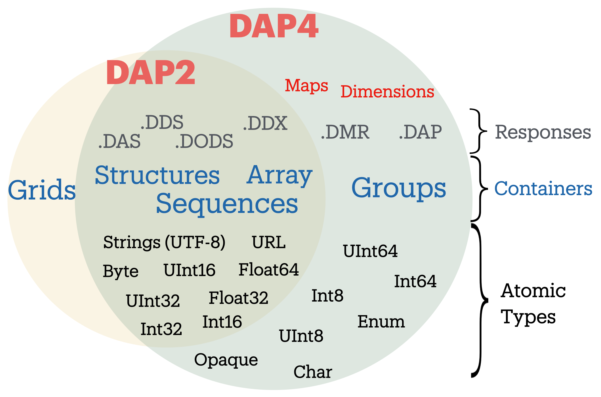
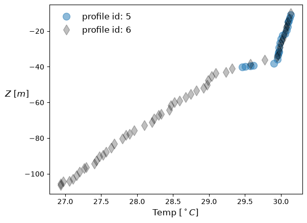

Protocolo OPeNDAP DAP#
Note
¿Por qué es importante entender el tipo de datos cubierto por cada protocolo? Los servidores OPeNDAP que implementan DAP2 y DAP4 están escritos en C/C++ y Java, lo que significa que las personas usuarias de PyDAP DEBEN conocer los tipos atómicos con los que estos servidores son compatibles.
En términos generales hay dos modelos de datos DAP: DAP2 y DAP4. Desde la perspectiva del cliente, estos dos tienen pequeñas diferencias, así que abajo proporcionamos una breve descripción de ambos.
El modelo de datos DAP4 está cerca de ser un superconjunto del modelo DAP2 antiguo, excepto que Grids ya no forman parte del modelo de datos DAP4 (ver Figura 1). Sin embargo, como el tipo de datos Grid es un objeto DAP2 (a diferencia de un objeto netCDF/HDF), un objeto Grid en DAP2 PUEDE representarse en DAP4. Esto significa que cualquier dataset representado por el modelo de datos DAP2 (y, digamos, disponible mediante un servidor TDS/Hyrax) puede representarse por completo en DAP4. Sin embargo, los tipos y objetos DAP4 (como Groups e Int64) servidos por un servidor remoto Hyrax/TDS no se pueden representar en DAP2, y pydap recibirá respuestas DAP a las que les faltan esos tipos de datos.
Para aprender más sobre la especificación DAP4, consulta la documentación oficial de DAP4, escrita conjuntamente por Unidata y OPeNDAP, Inc en 2016.
 |
|---|
Figura 1. Comparación entre modelos de datos y respuestas DAP2 y DAP4. |
PyDAP busca cubrir ampliamente todos los modelos de datos DAP2 y DAP4, y por ello cubre los siguientes objetos DAP:
Groups
Gridded Arrays.
Sequences (datos tabulares)
Structures.
Todos los tipos atómicos excepto
OpaqueyEnum(todos los demás tipos pueden representarse con datos de arreglos numpy).
Al abrir una URL remota, PyDAP creará un objeto Dataset que actúa como el directorio root. El Dataset de PyDAP puede contener múltiples tipos de datos, que pueden estar anidados. Como PyDAP se acerca al soporte completo del modelo DAP4, soporta Groups y Groups anidados, que a su vez pueden contener otros tipos de datos y otros objetos PyDAP anidados nombrados arriba.
Groups#
Los Groups son en gran medida una característica de los modelos de formato de archivo HDF5/NetCDF4. Muchos datasets remotos (por ejemplo, de NASA disponibles mediante servidores de datos Hyrax) pueden contener uno o más Groups, algunos de ellos anidados. Debido a la compleja especificación del modelo de datos HDF, la especificación DAP4 sigue de cerca el modelo netCDF4. Esto significa que no hay Groups cíclicos. En su lugar, siempre hay una raíz, y cada Group tiene un único Group padre.
Para leer datos desde un servidor DAP4 remoto, DEBES establecer open_url(..., protocol='dap4').
Considera el siguiente ejemplo:
from pydap.client import open_url
import numpy as np
import matplotlib.pyplot as plt
dataset = open_url('http://test.opendap.org:8080/opendap/atlas03/ATL03_20181228015957_13810110_003_01.h5', protocol='dap4')
dataset
<DatasetType with children 'orbit_info', 'METADATA', 'gt1r', 'gt2r', 'gt1l', 'quality_assessment', 'atlas_impulse_response', 'gt3l', 'gt2l', 'ancillary_data', 'gt3r', 'ds_surf_type', 'ds_xyz'>
print(dataset) solo devuelve los elementos dentro del directorio raíz. En DAP4, se puede navegar el dataset como si fuera un sistema de archivos POSIX e inspeccionar las variables dentro de un grupo (anidado). Por ejemplo:
dataset['gt1r']
<GroupType with children 'bckgrd_atlas', 'geolocation', 'geophys_corr', 'signal_find_output', 'heights'>
dataset['/gt1r/bckgrd_atlas'].tree()
.bckgrd_atlas
├──delta_time
├──tlm_height_band1
├──bckgrd_rate
├──tlm_top_band1
├──tlm_top_band2
├──bckgrd_int_height_reduced
├──bckgrd_hist_top
├──bckgrd_counts_reduced
├──tlm_height_band2
├──bckgrd_int_height
├──pce_mframe_cnt
└──bckgrd_counts
Observamos la variable bckgrd_int_height y sus dimensions:
dataset['/gt1r/bckgrd_atlas/bckgrd_int_height'].attributes
{'contentType': 'modelResult',
'coordinates': 'delta_time',
'description': 'The height of the altimetric range window. This is the height over which the 50-shot sum is generated. Parameter is ingested at 50-Hz, and values are repeated to form a 200-Hz array.',
'long_name': 'Altimetric range window width',
'source': 'ATL03 ATBD Section 7.3',
'units': 'meters',
'path': '/gt1r/bckgrd_atlas',
'Maps': ('/gt1r/bckgrd_atlas/delta_time',)}
dataset['/gt1r/bckgrd_atlas/bckgrd_int_height'].dimensions # dimensions of the variable
('/gt1r/bckgrd_atlas/delta_time',)
dataset['/gt1r/bckgrd_atlas'].dimensions # Dimension of the Group
{'delta_time': 89490}
Note
La dimension delta_time está definida a nivel de Group, con un nombre relativo al Group:/gt1r/bckgrd_atlas (anidado). Pero al inspeccionar un arreglo de variable que lista delta_time como su dimensión, la lista con su Fully Qualifying Name (FQN).
Los Fully Qualifying Names son una característica importante del modelo de datos DAP4, evitando colisiones de nombres entre Groups. Para leer más sobre Qualifying Names, te remitimos a la especificación oficial DAP4.
Intentar leer este dataset desde un servidor DAP4 puede producir un error.
import requests
try:
open_url('http://test.opendap.org:8080/opendap/atlas03/ATL03_20181228015957_13810110_003_01.h5', protocol='dap2')
except:
print("Your request was for a response that uses the DAP2 data model. This dataset contains variables whose data type is not compatible with that data model, causing this request to FAIL. To access this dataset ask for the DAP4 binary response encoding.")
Your request was for a response that uses the DAP2 data model. This dataset contains variables whose data type is not compatible with that data model, causing this request to FAIL. To access this dataset ask for the DAP4 binary response encoding.
En el caso anterior, una variable es de tipo Int64 (atómico), lo que causa el error. Sin embargo, si en cambio el atributo es de un tipo no soportado por el modelo DAP2, el servidor no lanzará un HTTPError, y PyDAP descargará un dataset incomplete (con atributos faltantes).
Arrays / Grids#
Empecemos accediendo a un Gridded Array, es decir, datos almacenados como un arreglo multidimensional regular. Aquí hay un ejemplo simple donde accedemos a la climatología COADS desde el servidor de pruebas OPeNDAP oficial:
dataset = open_url('http://test.opendap.org/dap/data/nc/coads_climatology.nc', protocol='dap4') # dap2 is the default
dataset
<DatasetType with children 'COADSX', 'COADSY', 'TIME', 'SST', 'AIRT', 'UWND', 'VWND'>
Aquí usamos la función pydap.client.open_url para abrir una URL OPeNDAP que especifica la ubicación del dataset. Cuando accedemos al dataset remoto, la función devuelve un objeto DatasetType, que es un diccionario elegante que almacena otras variables. Podemos comprobar los nombres de las variables almacenadas como haríamos con un diccionario de Python:
Otra forma útil de inspeccionar el dataset es el método .tree(), que proporciona una inspección detallada de tu dataset.
dataset.tree()
.coads_climatology.nc
├──COADSX
├──COADSY
├──TIME
├──SST
├──AIRT
├──UWND
└──VWND
Note
Todavía no se ha descargado ningún dato.
Trabajemos con la variable SST; podemos referenciarla de forma “perezosa” usando la sintaxis usual de diccionario dataset['SST'], o dataset.SST:
dataset['/SST'].attributes
{'missing_value': -9.99999979e+33,
'_FillValue': -9.99999979e+33,
'long_name': 'SEA SURFACE TEMPERATURE',
'history': 'From coads_climatology',
'units': 'Deg C',
'Maps': ('/TIME', '/COADSY', '/COADSX')}
dataset['/SST'].dimensions
('/TIME', '/COADSY', '/COADSX')
%%time
sst = dataset['SST'][0, 45:80, 45:125]
print('Type of object: ', type(sst))
Type of object: <class 'pydap.model.BaseType'>
CPU times: user 7.72 ms, sys: 3.4 ms, total: 11.1 ms
Wall time: 294 ms
Enfoque antiguo de DAP2#
Abajo accedemos al mismo dataset en el mismo servidor y solicitamos la respuesta DAP2.
dataset = open_url('http://test.opendap.org/dap/data/nc/coads_climatology.nc', output_grid=True) # dap2 is the default
dataset
<DatasetType with children 'COADSX', 'COADSY', 'TIME', 'SST', 'AIRT', 'UWND', 'VWND'>
dataset.tree()
.coads_climatology.nc
├──COADSX
├──COADSY
├──TIME
├──SST
│ ├──SST
│ ├──TIME
│ ├──COADSY
│ └──COADSX
├──AIRT
│ ├──AIRT
│ ├──TIME
│ ├──COADSY
│ └──COADSX
├──UWND
│ ├──UWND
│ ├──TIME
│ ├──COADSY
│ └──COADSX
└──VWND
├──VWND
├──TIME
├──COADSY
└──COADSX
sst = dataset['SST'] # or dataset.SST
sst
<GridType with array 'SST' and maps 'TIME', 'COADSY', 'COADSX'>
Observa que la variable es de tipo GridType, un arreglo multidimensional con ejes específicos que definen cada una de sus dimensiones:
sst.dimensions
('TIME', 'COADSY', 'COADSX')
sst.shape
(12, 90, 180)
len(sst)
4
Note
len y shape de sst difieren. La diferencia entre ellos es una propiedad de GridType: en este caso sst incluye consigo los coordinate axes necesarios para ser completamente “autodescriptivo”. Este comportamiento se hizo para imitar el modelo netCDF, donde cada archivo (en este caso cada gridded array) es “autodescriptivo” y por lo tanto contiene toda la información relevante para procesarlo. La vista tree del dataset anterior ilustra aún más el punto, con múltiples copias de datos de coordenadas en el dataset. Cada vez que descargas un GridType, también descargas los arreglos de dimensión usados para describirlo por completo.
Es posible especificar que NO se descarguen los ejes de coordenadas de una variable GridType al abrir una URL de la siguiente manera:
dataset = open_url("http://test.opendap.org/dap/data/nc/coads_climatology.nc")
dataset
<DatasetType with children 'COADSX', 'COADSY', 'TIME', 'SST', 'AIRT', 'UWND', 'VWND'>
NO se han descargado datos en memoria todavía, pero cuando descargues un arreglo GridType, los ejes de coordenadas no se descargarán. Este workaround importante es particularmente útil para acelerar flujos de trabajo y no sobrecargar servidores OPeNDAP antiguos que podrían quedarse sin memoria al intentar recuperar tanto los datos como los ejes de coordenadas de una variable.
Note
GridType es una especificación del modelo DAP2 y se eliminó en el mucho más nuevo DAP4. No obstante, los servidores OPeNDAP DAP4 soportan DAP2. Actualmente, cuando PyDAP abre una URL remota, si no se especifica protocol, PyDAP asume por defecto la especificación del modelo DAP2. Esto puede cambiar en el futuro.
En PyDAP, BaseType es una envoltura ligera de un numpy.ndarray con algunos de los mismos atributos básicos, como shape y nbytes. Dap4BaseProxy es un contenedor de datos vacío con todos los atributos del arreglo remoto, incluyendo:
namedtypeshapeslice
Para descargar datos en memoria debes rebanar el arreglo. Esto es:
%%time
sst = dataset['SST']['SST'][:]
print('Type of object: ', type(sst))
Type of object: <class 'pydap.model.BaseType'>
CPU times: user 10.7 ms, sys: 5.02 ms, total: 15.8 ms
Wall time: 260 ms
type(sst.data)
numpy.ndarray
Note
Una de las características de OPeNDAP es el server-side subsetting, que PyDAP puede aprovechar mediante el rebanado del arreglo al descargar datos. Por ejemplo, si solo te interesa una subregión localizada de todo el dominio (por ejemplo, un rango finito de latitudes y longitudes de la cobertura global), y conoces los índices que abarcan tu área de interés deseada.
%%time
sst = dataset['SST'][0, 45:80, 45:125]
print('Type of object: ', type(sst))
Type of object: <class 'pydap.model.BaseType'>
CPU times: user 6.58 ms, sys: 1.44 ms, total: 8.03 ms
Wall time: 210 ms
sst.shape
(1, 35, 80)
Note
El subconjunto ocurrió cerca de los datos gracias a la funcionalidad del servidor OPeNDAP, y solo se descargan los datos que solicitamos en el rebanado.
Note
Rebanar el arreglo antes de descargar casi siempre resultará en mejor rendimiento y aceleraciones. Esto puede ser significativo para datasets muy grandes y particularmente útil al automatizar flujos de trabajo que requieren descargar datos en memoria para procesamiento posterior.
Datos tabulares#
Veamos ahora datos tabulares, que PyDAP llama Sequences (típicamente asociadas con datos in situ secuenciales). Aquí consideramos otro archivo dentro del servidor de pruebas OPeNDAP por simplicidad. Puedes acceder al catálogo AQUÍ.
Note
Los datos secuenciales consisten en uno o más registros de variables relacionadas, como mediciones simultáneas de temperatura y velocidad del viento, por ejemplo.
ds = open_url("http://test.opendap.org/opendap/hyrax/data/ff/gsodock1.dat")
ds.tree()
.gsodock1.dat
└──URI_GSO-Dock
├──Time
├──Depth
├──Sea_Temp
├──Salinity
├──DO
├──pH
├──Turbidity
├──Air_Temp
├──Wind_Speed
├──Wind_Direction
└──Barometric_Pres
ds['URI_GSO-Dock']
<SequenceType with children 'Time', 'Depth', 'Sea_Temp', 'Salinity', 'DO%20', 'pH', 'Turbidity', 'Air_Temp', 'Wind_Speed', 'Wind_Direction', 'Barometric_Pres'>
Datos in situ de ERDDAP#
Considera un ejemplo más complejo. Aquí miramos datos del DAC de glider en el Integrated Ocean Observing System. Los datos se pueden acceder a través de un servidor OPeNDAP, así como del servidor ERRDAP. En el ejemplo abajo demostramos cómo acceder a datos de glider de un estudio Deep-Pelagic Nekton frente al Golfo de México, con pydap mediante ERRDAP.
Miramos el Dataset ID: Murphy-20150809T1355. Su formulario de acceso ERDDAP se puede encontrar AQUÍ
ds = open_url("https://gliders.ioos.us/erddap/tabledap/Murphy-20150809T1355")['s']
ds.tree()
.s
├──trajectory
├──wmo_id
├──profile_id
├──time
├──latitude
├──longitude
├──depth
├──conductivity
├──conductivity_qc
├──density
├──density_qc
├──depth_qc
├──instrument_ctd
├──lat_qc
├──lat_uv
├──lat_uv_qc
├──lon_qc
├──lon_uv
├──lon_uv_qc
├──platform
├──precise_lat
├──precise_lon
├──precise_time
├──pressure
├──pressure_qc
├──profile_lat_qc
├──profile_lon_qc
├──profile_time_qc
├──qartod_conductivity_flat_line_flag
├──qartod_conductivity_gross_range_flag
├──qartod_conductivity_primary_flag
├──qartod_conductivity_rate_of_change_flag
├──qartod_conductivity_spike_flag
├──qartod_density_flat_line_flag
├──qartod_density_gross_range_flag
├──qartod_density_primary_flag
├──qartod_density_rate_of_change_flag
├──qartod_density_spike_flag
├──qartod_location_test_flag
├──qartod_pressure_flat_line_flag
├──qartod_pressure_gross_range_flag
├──qartod_pressure_primary_flag
├──qartod_pressure_rate_of_change_flag
├──qartod_pressure_spike_flag
├──qartod_salinity_flat_line_flag
├──qartod_salinity_gross_range_flag
├──qartod_salinity_primary_flag
├──qartod_salinity_rate_of_change_flag
├──qartod_salinity_spike_flag
├──qartod_temperature_flat_line_flag
├──qartod_temperature_gross_range_flag
├──qartod_temperature_primary_flag
├──qartod_temperature_rate_of_change_flag
├──qartod_temperature_spike_flag
├──salinity
├──salinity_qc
├──temperature
├──temperature_qc
├──time_qc
├──time_uv
├──time_uv_qc
├──u
├──u_qc
├──v
└──v_qc
Donde las variables s identifican los datos secuenciales.
type(ds)
pydap.model.SequenceType
Podemos identificar más cada dato individual de glider mirando profile_id, un valor único para cada uno. Puedes inspeccionar los valores crudos de la siguiente manera.
[id for id in ds['profile_id'].iterdata()]
[np.int32(1),
np.int32(2),
np.int32(3),
np.int32(4),
np.int32(5),
np.int32(6),
np.int32(7),
np.int32(8),
np.int32(9),
np.int32(10),
np.int32(11),
np.int32(12),
np.int32(13),
np.int32(14),
np.int32(15),
np.int32(16),
np.int32(17),
np.int32(18),
np.int32(19),
np.int32(20),
np.int32(21),
np.int32(22),
np.int32(23),
np.int32(24),
np.int32(25),
np.int32(26),
np.int32(27),
np.int32(28),
np.int32(29),
np.int32(30),
np.int32(31),
np.int32(32),
np.int32(33),
np.int32(34),
np.int32(35),
np.int32(36),
np.int32(37),
np.int32(38),
np.int32(39),
np.int32(40),
np.int32(41),
np.int32(42),
np.int32(43),
np.int32(44),
np.int32(45),
np.int32(46),
np.int32(47),
np.int32(48),
np.int32(49),
np.int32(50),
np.int32(51),
np.int32(52),
np.int32(53),
np.int32(54),
np.int32(55),
np.int32(56),
np.int32(57),
np.int32(58),
np.int32(59),
np.int32(60),
np.int32(61),
np.int32(62),
np.int32(63),
np.int32(64),
np.int32(65),
np.int32(66),
np.int32(67),
np.int32(68),
np.int32(69),
np.int32(70),
np.int32(71),
np.int32(72),
np.int32(73),
np.int32(74),
np.int32(75),
np.int32(76),
np.int32(77),
np.int32(78),
np.int32(79),
np.int32(80),
np.int32(81),
np.int32(82),
np.int32(83),
np.int32(84),
np.int32(85),
np.int32(86),
np.int32(87),
np.int32(88),
np.int32(89),
np.int32(90),
np.int32(91),
np.int32(92),
np.int32(93),
np.int32(94),
np.int32(95),
np.int32(96),
np.int32(97),
np.int32(98),
np.int32(99),
np.int32(100),
np.int32(101),
np.int32(102),
np.int32(103),
np.int32(104),
np.int32(105),
np.int32(106),
np.int32(107),
np.int32(108),
np.int32(109),
np.int32(110),
np.int32(111),
np.int32(112),
np.int32(113),
np.int32(114),
np.int32(115),
np.int32(116),
np.int32(117),
np.int32(118),
np.int32(119),
np.int32(120),
np.int32(121),
np.int32(122),
np.int32(123),
np.int32(124),
np.int32(125),
np.int32(126),
np.int32(127),
np.int32(128),
np.int32(129),
np.int32(130),
np.int32(131),
np.int32(132),
np.int32(133),
np.int32(134),
np.int32(135),
np.int32(136),
np.int32(137),
np.int32(138),
np.int32(139),
np.int32(140),
np.int32(141),
np.int32(142),
np.int32(143),
np.int32(144),
np.int32(145),
np.int32(146),
np.int32(147),
np.int32(148),
np.int32(149),
np.int32(150),
np.int32(151),
np.int32(152),
np.int32(153),
np.int32(154),
np.int32(155),
np.int32(156),
np.int32(157),
np.int32(158),
np.int32(159),
np.int32(160),
np.int32(161),
np.int32(162),
np.int32(163),
np.int32(164),
np.int32(165),
np.int32(166),
np.int32(167),
np.int32(168),
np.int32(169),
np.int32(170),
np.int32(171),
np.int32(172),
np.int32(173),
np.int32(174),
np.int32(175),
np.int32(176),
np.int32(177),
np.int32(178),
np.int32(179),
np.int32(180),
np.int32(181),
np.int32(182),
np.int32(183),
np.int32(184),
np.int32(185),
np.int32(186),
np.int32(187),
np.int32(188),
np.int32(189)]
Note
OPeNDAP y por lo tanto PyDAP soportan nombres completamente calificados, que son útiles para estructuras de datos complejas (anidadas). En el caso de datos Sequential, puedes acceder a una variable <VarName> dentro de una secuencia llamada <Seq> como <Seq.VarName>.
Estos datasets son ricos en metadatos, a los que se puede acceder mediante la propiedad attributes de la siguiente manera.
ds['profile_id'].attributes
{'_FillValue': -1,
'actual_range': [1, 189],
'cf_role': 'profile_id',
'comment': 'Sequential profile number within the trajectory. This value is unique in each file that is part of a single trajectory/deployment.',
'ioos_category': 'Identifier',
'long_name': 'Profile ID',
'valid_max': 2147483647,
'valid_min': 1}
Lo primero que queremos hacer es limitar nuestro análisis muy simple. Consideramos solo un glider y solo inspeccionamos las variables depth y temperature. Esto es similar a una selección por columnas.
Para lograrlo usamos la lógica simple de pydap como sigue:
seq = ds[('profile_id', 'depth', 'temperature')]
print(type(seq))
seq.tree()
<class 'pydap.model.SequenceType'>
.s
├──profile_id
├──depth
└──temperature
Filtrar datos#
Con datos Sequential podemos usar filters para extraer solo aquellos valores asociados con una o más rows. Es decir, identificar todos los valores de la secuencia que son menores, iguales o mayores que cierto valor.
Por ejemplo, consideremos valores de depth y temperature asociados con el valor profile_id=5.
glid5 = seq[('profile_id', 'depth', 'temperature')][seq['profile_id'].data==5]
glid5
<SequenceType with children 'profile_id', 'depth', 'temperature'>
Depths5 = np.array([depth for depth in glid5['depth']])
ids5 = np.array([_id for _id in glid5['profile_id']])
Temps5 = np.array([temp for temp in glid5['temperature']])
Intentemos otro profile_id.
glid6 = seq[('profile_id', 'depth', 'temperature')][seq['profile_id'].data==6]
Depths6 = np.array([depth for depth in glid6['depth']])
ids6 = np.array([_id for _id in glid6['profile_id']])
Temps6 = np.array([temp for temp in glid6['temperature']])
plt.plot(Temps5, -Depths5, ls='', marker='o', markersize=10, alpha=0.5, label='profile id: ' +str(ids5[0]))
plt.plot(Temps6, -Depths6, 'k', ls='', marker='d', markersize=10, alpha=0.25, label='profile id: ' +str(ids6[0]))
plt.xlabel(r'$\text{Temp} \;[^\circ C]$', fontsize=12.5)
plt.ylabel(r'$Z\;[m]$', fontsize=12.5, rotation=0, labelpad=10)
plt.legend(fontsize=12.5, frameon=False);

Warning
Todas las funcionalidades avanzadas descritas abajo pueden estar desactualizadas.
Funcionalidades avanzadas#
Llamar funciones del lado del servidor
Cuando abres un dataset remoto, el objeto DatasetType tiene un atributo especial llamado functions que puede usarse para invocar cualquier función del lado del servidor. Aquí hay un ejemplo de uso de la función geogrid de Hyrax:
>>> dataset = open_url("http://test.opendap.org/dap/data/nc/coads_climatology.nc")
>>> new_dataset = dataset.functions.geogrid(dataset.SST, 10, 20, -10,60)
>>> new_dataset.SST.COADSY[:]
[-11. -9. -7. -5. -3. -1. 1. 3. 5. 7. 9. 11.]
>>> new_dataset.SST.COADSX[:]
[ 21. 23. 25. 27. 29. 31. 33. 35. 37. 39. 41. 43. 45. 47. 49. 51. 53. 55. 57. 59. 61.]
Desafortunadamente, actualmente no hay un mecanismo estándar para descubrir qué funciones soporta el servidor. El atributo function aceptará cualquier nombre de función que la persona usuaria especifique e intentará pasar la llamada al servidor remoto.
Configurar un proxy#
Warning
Esto puede estar desactualizado.
Es posible configurar pydap para acceder a la red mediante un servidor proxy. Aquí hay un ejemplo para un proxy HTTP ejecutándose en localhost y escuchando en el puerto 8000:
import httplib2
from pydap.util import socks
import pydap.lib
pydap.lib.PROXY = httplib2.ProxyInfo(
socks.PROXY_TYPE_HTTP, 'localhost', 8000)
De esta forma, todas las llamadas posteriores a pydap.client.open_url se enrutarán a través del servidor proxy. También puedes autenticarte en el proxy:
pydap.lib.PROXY = httplib2.ProxyInfo(
socks.PROXY_TYPE_HTTP, 'localhost', 8000,
proxy_user=USERNAME, proxy_pass=PASSWORD)
Una persona usuaria ha reportado que httplib2 tiene problemas para autenticarse contra un servidor proxy NTLM. En este caso, una solución simple es cambiar la función pydap.http.request para que use urllib2 en lugar de httplib2, monkeypatcheando el código como en el ejemplo de autenticación CAS anterior:
import urllib2
import logging
def install_urllib2_client():
def new_request(url):
log = logging.getLogger('pydap')
log.INFO('Opening %s' % url)
f = urllib2.urlopen(url.rstrip('?&'))
headers = dict(f.info().items())
body = f.read()
return headers, body
from pydap.util import http
http.request = new_request
La función install_urllib2_client debe llamarse antes de hacer cualquier solicitud.